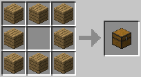
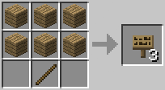
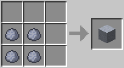
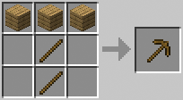
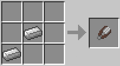

How Does Crafting Work
Crafting is where you build majority items in the game. Blocks, tools, potions, etc are built in crafting. In order to craft you need to make the table which four planks of whatever wood you have. You open your inventory screen and the 2x2 crafting grid is where you can place the wooden planks to make the table. You can see some recipes in the table below!
Basic Recipes
| Name | Ingredients | Image |
|---|---|---|
| Wooden Planks | Log |  |
| Sticks | Wooden Planks |  |
| Torches | Coal & Stick |  |
| Furnace | Cobblestone or Blackstone |  |
| Chest | Wooden Planks |  |
| Ladders | Sticks |  |
| Fence | Sticks & Wooden Planks |  |
| Boat | Wooden Planks |  |
| Wooden Slabs | Wooden Planks |  |
| Stone Slabs | Stone, Brick, Stone Brick, Sandstone, Cobblestone, Nether Brick, Quartz, or Red Sandstone can be used | |
| Sign | Wooden Planks & Stick |  |
| Doors | Wooden Planks or Iron Ingots |  |
| TNT | Gunpowder & Sand |  |
| Clay Block | Clay |  |
| Brick Block | Clay Bricks |  |
| Bookshelf | Wooden Planks & Books | |
| Stone Brick | Stone |  |
| Wooden Stairs | Wooden Planks | |
| Polished Andesite | Andesite | |
| Pickaxes | Sticks & Wooden Planks, Cobblestone/Blackstone, Iron, Gold, or Diamonds |  |
| Axes | Sticks & Wooden Planks, Cobblestone/Blackstone, Iron, Gold, or Diamonds |  |
| Shovels | Sticks & Wooden Planks, Cobblestone/Blackstone, Iron, Gold, or Diamonds |  |
| Hoes | Sticks & Wooden Planks, Cobblestone/Blackstone, Iron, Gold, or Diamonds |  |
| Fishing Rod | Sticks & String |  |
| Flint & Steel | Iron Ingot & Flint |  |
| Bucket | Iron Ingots |  |
| Shears | Iron Ingots |  |
Here Are Some Of My Favorite Builds From YouTube!
Majority of these are fantasy to medieval builds.
Links
- This is atrain stationtutorial byArmun
- This is alibrarytutorial by LionCheater
- This is aclock towertutorial byMinecraft Fantasy Builds
- This is alighthousetutorial byIJCraft Builds
- This is amedieval mansiontutorial byLex The Builder
- This is amedieval churchtutorial byMaster Majesty
- This is awhite and pink housetutorial by愛channel
- This is acherry blossom farmtutorial byPolar Cat